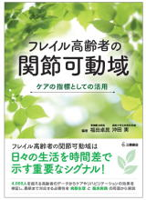
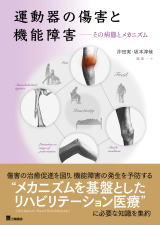
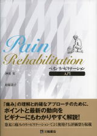
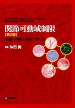
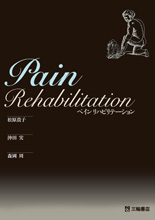
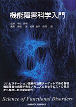
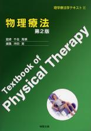
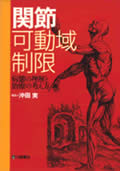

2023
青梅慶友病院との共同研究成果をまとめた一冊。4,000名を超えるフレイル高齢者のデータを基に、関節可動域制限の病態、看護・リハビリテーション・レクリエーション視点でのケア、機能障害対策を6章構成で解説する。
ISBN 978-4-89590-792-7 C 3047

2021
理学療法学教育モデル・コア・カリキュラムに準拠し、90分×15回の講義を想定した15章構成。炎症、疼痛、組織損傷、機能障害、フレイルをメカニズムベースで体系的に解説する。
ISBN 978-4-89590-720-0 C 3047

2019
厚生労働科学研究「痛み」教育コンテンツをベースとした初学者向け書籍。痛みの理解・アセスメント・マネジメントの3章構成で、スライド配付資料風レイアウトを採用。巻末に評価票を掲載する。
ISBN 978-4-89590-634-0 C 3047
2014
青梅慶友病院との共同研究成果。終末期障害高齢者の拘縮対策を6章構成で解説。発生要因、臨床像、リハビリテーションのエビデンス、看護・介護視点での対応、実践例を網羅する。
ISBN 978-4-89590-492-6 C 3047

2013
初版から5年間に蓄積したデータを反映した改訂版。筋性拘縮の分子レベル分析、国内初となる皮膚性拘縮の紹介を含む。関節周囲軟部組織の器質的変化を網羅的に解説する。
ISBN 978-4-89590-435-3 C 3047

2011
末梢組織と脳における痛みの発生メカニズムを専門家が解説。4章構成でペインリハビリテーションの基礎から臨床までを網羅した。
ISBN 978-4-89590-385-1 C 3047

2010
理学・作業療法士養成課程向けの入門書。基礎医学と臨床医学を専門科目と結びつける構成で、機能障害の病態と発生メカニズムを体系的に解説する。短文形式を採用し読みやすさを重視した。
ISBN 978-4-915814-28-0

2009
1998年の初版から10年以上を経た改訂版。エビデンスベースの各種物理療法を解説し、炎症・組織修復・疼痛病態の理解を強化。CPM機器と振動刺激療法を新規追加した。
ISBN 978-4-915814-24-2

2008
関節可動域制限の病態と治療戦略をエビデンスに基づいて解説した初版。理学療法学テキストシリーズの一冊として刊行された。
ISBN 978-4-89590-291-5